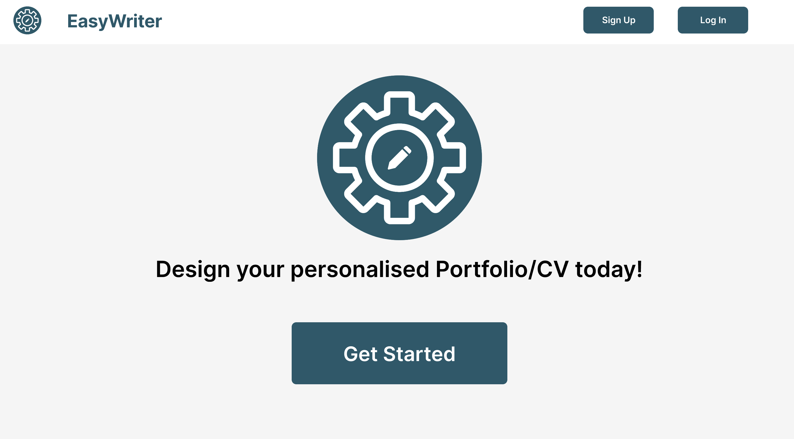
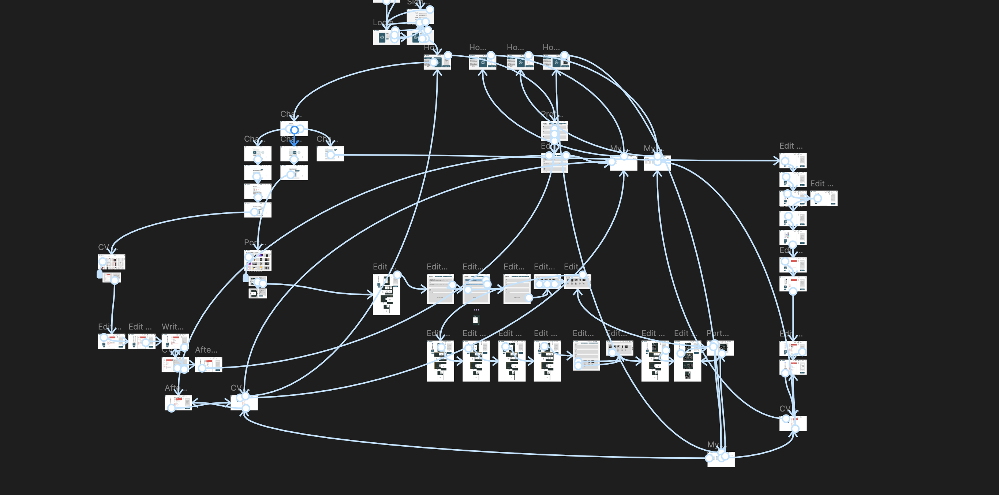
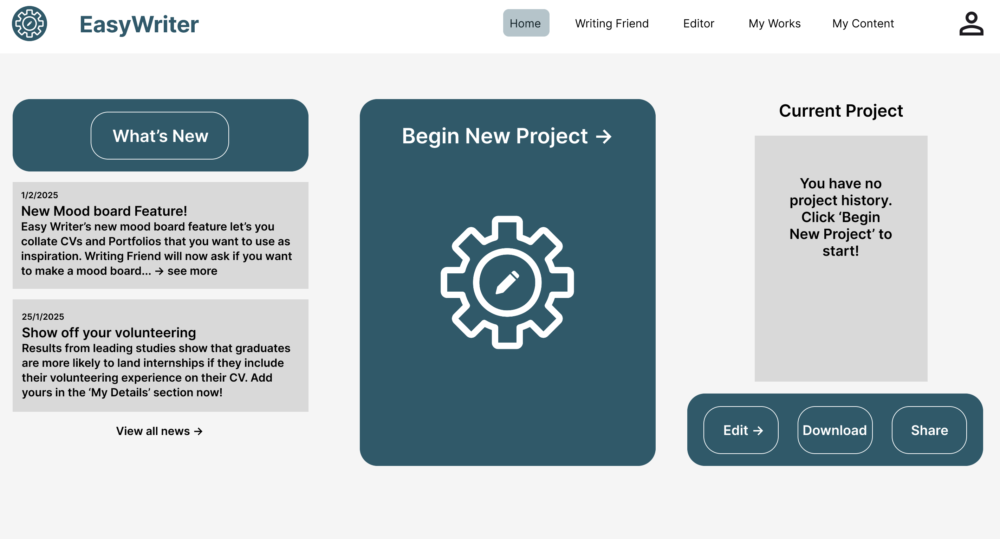

User provides background information
The user enters relevant education, experience, and skill information to give the system enough context.
Human-AI Interaction / Conversational UX / Prototype
A human-AI collaboration prototype that explores how students can use AI-generated suggestions to create clearer CV content while staying in control of the final output.
This project explored how AI could support students in creating CV content. Rather than treating AI as a complete replacement for the user, the prototype positioned AI as a design assistant that could generate suggestions while allowing users to review, edit, and control the final content.
My role involved user research, conversational flow design, and interactive Figma prototyping. The team conducted research with nine student participants and developed a prototype with more than ten screens to test task clarity and workflow efficiency.

Students may want help writing CV content, but AI-generated text can feel generic, inaccurate, or difficult to trust. The key challenge was to design a workflow that made AI suggestions useful without removing the user’s control over their own professional identity.
The interface needed to support clarity, trust, and editing. Users had to understand what the AI was suggesting, why it was useful, and how they could accept, adjust, or reject the output.

The project was guided by a central question:
How can an AI-supported CV tool help students create useful CV content while keeping them in control of the final output?
The user enters relevant education, experience, and skill information to give the system enough context.
The system generates draft wording or content suggestions based on the user’s input.
The user can check whether the suggestion is accurate, adjust the wording, or reject the output.
Confirmed content is added into the CV structure while keeping the user in control of the final result.

AI-generated suggestions needed to feel transparent and reviewable, so users could judge whether the content matched their actual experience.
The workflow gave users opportunities to edit, confirm, or reject AI-generated text instead of accepting automated output passively.
The prototype guided users through each step of CV creation, reducing uncertainty around what information to provide and what to do with AI suggestions.
Reflection
The project helped me understand that AI experience design is not only about generating content. It is also about helping users understand, evaluate, edit, and control automated suggestions. This shaped how I think about trust, transparency, and user agency in human-AI interaction.